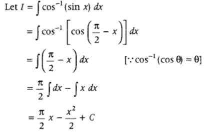

Chapter 1: Relations and Functions
Topic 1: Relations
6 Marks Questions
Q1-Let N denote the set of all natural numbers and R be the relation on N × N defined by: (a, b) R (c, d) if ad(b + c) = bc(a + d). Show that R is an equivalence relation. (65/1 2015) (65/2 2016)
Solution- 
Q2- Let A = {x ∈ Z : 0 <= x <= 12}. Show that R = {(a, b) : a, b ∈ A, |a – b| is divisible by 4} is an equivalence relation.
Find the set of all elements related to 1. Also write the equivalence class [2]. (65/1 2017) (65/3 2017)
Solution-
Q3- Show that the function f : R -> R defined by f(x) = x/x2+1, x ∈ R is neither one-one nor onto.
Also, if g : R -> R is defined as g(x) = 2x – 1, find fog(x). (65/1 2018) (65/3 2018)
Solution-
Topic 2: Functions
1 Mark Questions
Q1- If R = {(x, y) : x + 2y = 8} is a relation on N, write the range of R. (65/1 2013) (65/2 2013)
Solution- 
Q2- If a * b denotes the larger of ‘a’ and ‘b’ and if a o b = (a * b) + 3, then write the value of (5) o (10), where * and o are binary operations. (65/1 2017) (65/2 2017)
Solution- (5) o (10) = (5 * 10) + 3 = 10 + 3 = 13
2 Marks Questions
Q1- If the function f : R -> R be given by f(x) = x2 + 2 and g : R -> R be given by g(x) = x/x-1, x ≠ 1, find fog and gof and hence find fog(2) and gof (– 3) (65/1 2014) (65/2 2014)
Solution-
Chapter 2: Inverse Trigonometric Functions
Topic 1: Inverse Trigonometric Functions
1 Marks Questions
Q1- If tan–1x + tan–1y = π/4, xy < 1, then write the value of x + y + xy. (65/2 2014) (65/3 2014)
Solution-
Q2- Find the value of tan–1√3 – cot–1(–√3). (65/2 2018) (65/3 2018)
Solution- π/3 - ( π - π/6 = - π/2
2 Marks Questions
Q1- (65/2 2013) (65/3 2013)
Solution- 
Q2- (65/3 2014) (65/1 2014)
Solution- 
4 Marks Questions
Q1- If sin [cot–1 (x + 1)] = cos(tan–1x), then find x. (65/2 2015) (65/3 2015)
Solution- 
Q2- If (tan–1x)2 + (cot–1x)2 = 5π/8, then find x.(65/3 2016) (65/1 2016)
Solution-
Chapter 3: Matrices
Topic 1: Operations on Matrices
1 Marks Questions
Q1- 
Solution- 
4 Marks Questions
Q1- (65/1 2015) (65/2 2015) (65/1 2016)
Solution-
Topic 2: Symmetric and Skew Symmetric Matrices
1 Mark Questions
Q1- (65/2 2017) (65/3 2018)
Solution- a = –2, b = 3
Topic 3: Elementary Operation (Transformation) of a Matrix
6 Marks Questions
Q1- (65/1 2017) (65/3 2018)
Solution- 
Chapter 7: Integrals
Topic 1: Integration as an Inverse Process of Differentiation
1 Mark Questions
Q1- Find ∫sin6xcos8x dx. (65/1, 2014)(65/2, 2014)(65/3, 2014)
Solution-
Q2- Find ∫cos-1(sin x) dx. (65/1, 2014)(65/2, 2014)
Solution-

Q3- Write the anti-derivative of (3√x + 1/√x) (65/1, 2014)(65/2, 2014)
Solution- 
Q4- Find ∫sin3x+cos3x/sin2xcos2x dx (65/1, 2019)(65/2, 2019)
Solution- 
Q5- Find ∫sec2x/√tan2x+4 dx.
(65/3, 2019)
Solution-
Q6- Find: ∫ √1−sin2x dx, π/4 < x < π/2
(65/1, 2019)(65/2, 2019)(65/3, 2019)
Solution-
Q7- Evaluate ∫cos2x+2sin2x/cos2x dx
(65/2, 2018)
Solution- 
Q8- Find: ∫3−5sinx/cos2x dx
(65/1, 2018)(65/2, 2018)(65/3, 2018)
Solution- Let I = ∫3−5sinx/cos2x dx
= ∫(3/cos2x−5sinx/cos2x) dx
= 3 ∫sec2x dx – 5 ∫ sec x tan x dx
= 3tanx – 5secx + C
Topic 2: Integrals of Some Particular Functions
1 Mark Questions
Q1- Find ∫dx/(x2+4x+8) (65/1, 2017)(65/2, 2017)
Solution-
Q2- Find ∫dx/(5−8x−x2) (65/3, 2017)
Solution-
Q3- Evaluate ∫(3 – 2x)√2+x−x2 dx (65/1, 2015, 65/2, 2015, 65/3, 2015)
Solution- 2/3(2+x-x2)3/2 + (2x-1)/2 √2+x−x2 + 9/4 sin-1(2x-1)/3 + C
2 Marks Questions
Q1- Find: ∫3x+5/x2+3x−18 dx (65/1, 2019)(65/2, 2019)(65/3, 2019)
Solution-
Q2- Find the value of ∫cosx/(1+sinx)(2+sinx) dx (65/2, 2019)
Solution-
Q3- Find ∫x22+x+1/(x+2)(x2+1) dx (65/2, 2019)(65/3, 2019)
Solution-
Q4- Find ∫4/(x−2)(x2+4) dx (65/1, 2018)(65/2, 2018)(65/3, 2018)
Solution-
Q5- Find ∫(3sinθ−2)cosθ/5−cos2θ−4sinθ dθ (65/1, 2016)(65/2, 2016)(65/3, 2016)
Solution- 
Q6- Find ∫√x/√a3−x3dx (65/1, 2016)
Solution- 
Q7- Find ∫(x2+1)ex(x+1)2 dx (65/1, 2020)(65/2, 2020)(65/3, 2020)
Solution- 
3 Marks Questions
Q1- Find ∫(x + 3)√(3−4x−x2) dx (65/3, 2016)
Solution-
First, use the method for integral of the form
∫(px + q)√ax2+bx+c dx,
consider (px + q) = A d/dx (ax2 + bx + c) + B,
simplify and get the values of A and B.
Further, simplify the integrand and use the formula
∫√a2−x2dx = [1/2x√a2−x2+a2/2sin-1(xa)+C]
Let I = ∫(x + 3) √3−4x−x2 dx
Given integral is the form of
∫ (px + q) ax2+bx+c−−−−−−−−−−√ dx
Let (x + 3) = A d/dx (3 – 4x – x2) + B
⇒ x + 3 = A(- 4 – 2x) + B
⇒ x + 3 = (- 4A + B) – 2Ax
On comparing the coefficients of x and constant terms, we get
– 2A = I
⇒ A = – 12
and – 4A + B = 3 ⇒ 2 + B = 3 ⇒ B = 1 …….. (1)
Thus. (x + 3) = – 12 (- 4 – 2x) + 1 [from Eq. (1)]
Now, given integral becomes
I=--4-2x)√3-4x-x²dx + √3-4x-x² dx...(ii)
I = I1+ I2 (say)
Now, consider
I1 = 1/2(-4-2x)√3-4x-x² dx
Put
3-4x-x² 2=t
(-4-2x)dx = dt =-√id=x²+C1 dt 2 3 =-1/3-4x-x22+C1
and
I2 = √3-4x-x² dx = √(x² + 4x - 3) dx = √(x²+2x2x+4-4-3) dx = [√-{(x+2)²-7}dx =√7-(x+2)² dx = √(√7)² - (x + 2)2dx =(x+2)√3-4x-x²+7sin(x+2)]+ 1 [√a²-x² dx = x√a²-x² +a2sin()]+c +C
Now, from Eq. (ii), we have I = -1/3 (3-4x-x2)2+(x+2)3-4x-x² 3 2 +sin()+c
where, C = C₁+ C2.
Q2- Evaluate ∫1/cos4x+sin3x dx
Solution- 
5 Marks Questions
Q1- Integrate w.r.t. x, x2−3x+1/√1−x2
Solution-
Topic 3: Integration by Partial Fractions
2 Marks Questions
Q1- Find ∫x3/x4+3x2+2
Solution- 
3 Marks Questions
Q1- Find ∫log|x|(x+1)2 dx (65/1, 2020)(65/2, 2020)(65/3, 2020)
Solution-
5 Marks Questions
Q1- Find ∫dx/sinx+sin2xdx (65/1, 2015)
Solution- First, simplify the integrand in such a form that numerator is in sin form and denominator is in cos form, Substitute cos x = t and then convert the given integrand in the form of t.
Now, use partial traction in the integrand and then integrate it. Further, substitute the value oft and get the required result.
Q2-